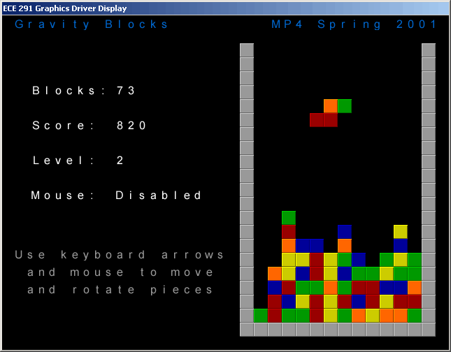

| ECE 291 |
Computer Engineering II
|
Potts, Spring 2001 |
Machine Problem 4: Gravity Blocks
| Assigned |
Tuesday 3/20/01 |
| Due Date |
Checkpoint: Wednesday 3/28/01
Final: Wednesday 4/11/01
|
| Purpose |
Protected Mode, High Resolution Graphics, Mouse, Gameplay |
| Points |
100 |
Introduction
In this MP, you will be programming a puzzle game called Gravity Blocks using
high resolution graphics in protected mode. There's no turning back now
and no immunity challenges to save you. Can you survive for three weeks
Everitt Lab eating only the food in the vending machines? Don't worry, it
won't be that bad...

Problem Description
The rules of Gravity Blocks are simple. Each of the seven game pieces
is composed of four smaller blocks, and each block can be one of
five colors. Randomly generated pieces
fall from the top of the game board, and when a piece hits a block in the
game board, the piece will break apart, and its individual blocks will fall
further down the game board if possible. You need to place the pieces in
the game board such that matching three (or more) blocks of the same color
vertically, horizontally, or diagonally will first clear those blocks from the
board and then cause the blocks resting on top of the cleared blocks (if any) to
fall down. This process of clearing and dropping blocks continues until no
more blocks need to be cleared. Thus, by dropping only one piece on to the
game board, you can set off a sequence of cleared blocks. The object of the game is to clear as many blocks as
possible. When the blocks in the game board reach the top, the game is
over.
You will be implementing the game by doing the following:
Functions
This assignment has thirty (30) functions. You will receive credit by
replacing each of the thirty functions listed below with your own code.
All the functions are C-style functions (parameters on stack, return value in
eax/ax/al, all general purpose registers other than esi and edi may be
clobbered). A function that does not take any parameters will be denoted as void
within the parentheses. A parameter name prefixed with an asterisk ( * ) means it is a
pointer, otherwise this parameter is an actual value. The size of the parameters will be denoted as short
which represents a word (2 bytes) and long represents a double word (4
bytes). A function that does not return a value will be declared as void,
otherwise the size of return value will be specified using the previously
mentioned scheme.
void _MP4Main(void)
- Runs main game loop and game over loop
- Inputs: None
- Outputs: None
- Calls: _Initialize, _MovePiece, _RotatePieceCW, _ClearAllBlocks, _GetNextPiece,
_CheckPieceCollision, _UpdateMouseVisibility, _DrawAll
- Points: 8
- Notes:
- Call Initialize before the main game loop
- In main game loop (in no particular order):
- When a piece cannot move down further, clear all the blocks
and then generate a new piece
- When [_TimerTick] = [_MoveDownTime], move the current piece down
and update [_MoveDownTime] as follows: add ( 14 - [_Level] ) to
[_MoveDownTime].
The speed stops increasing at level 10. So, if the user
reaches a higher level, the previous update should be done as if
the user were at level 10.
- Update the screen when a new piece is generated, and draw the
current piece
- Set the "end of game flag" if the blocks pile up to
the top of the game board
- Loop terminates when either the user pressed ESC or when a new
piece is generated that collides with blocks in the game board
- Do not unconditionally call _DrawAll in your main game loop as
this will cause your game to move very slow. Only update
the screen when necessary, as this is an expensive operation (MovePiece
and RotatePieceCW already do this - they call _DrawAll only when a piece
is moved or rotated).
- In game over loop:
- If user pressed ESC to exit game in above loop, then bypass game
over loop. Otherwise, just keep updating the screen, drawing
the current piece, until the user presses ESC.
void _Initialize(void)
- Initializes game variables
- Inputs: None
- Outputs: [_NumBlocks], [_Level], [_Score], [_GameFlags], [_MoveDownTime]
- Calls: _GetNextPiece
- Points: 2
- Notes:
- Set number of blocks and score to zero
- Set level to one
- Clear all game flags
- Set [_MoveDownTime] = [_TimerTick] + ( 14 - [_Level] ). The speed stops increasing at level 10. So, if the user
reaches a higher level, the previous update should be done as if
the user were at level 10.
void _GetNextPiece(void)
- Generates a new piece
- Inputs: [_Pieces]
- Outputs: [_CurrentPiece], [_XPos], [_YPos], [_GameFlags], [_MoveDownTime]
- Calls: _Random
- Points: 5
- Notes:
- You may used the library provided Random function to get your
random numbers
- There are seven game pieces
- Once you get a random number for the piece, multiply it by 16 to get your
offset of the first position of the piece you have chosen in the
Pieces array. Do NOT use the mul instruction to do this -
there are much cleaner ways to multiply by 16.
- If you encounter a 0 in the Pieces array, copy the 0 to the
CurrentPiece array. Otherwise generate a number for the color
of the block and copy the block number to the CurrentPiece
array
- There are five block colors, and you will need random numbers
between 2 and 6 inclusive to choose the block (look at the
blocks.png file to see why - the five colored blocks are blocks 2
thru 6 in the file)
- The random number generator does not give good sequences of
numbers when called with a low MaxNum, such as 5. To
get pieces that have more than one block of the same color, you may
choose to call the Random function with a somewhat larger value
(like 6 or 7), and loop until you get a number between 0 and 4 (the
range when you call Random with 5).
- Clear all game flags except the mouse enable flag
- Start the current piece off at (XPos,YPos) = (6,1) in the game
board
- Set [_MoveDownTime] = [_TimerTick] + ( 14 - [_Level] ). The speed stops increasing at level 10. So, if the user
reaches a higher level, the previous update should be done as if
the user were at level 10.
void _MovePiece(void)
- Checks to see if the current piece should be moved, and if so, moves current piece in the direction specified by the direction
bits in [_GameFlags]
- Inputs: [_GameFlags], [_XPos], [_YPos]
- Outputs: [_GameFlags], [_XPos], [_YPos]
- Calls: _CheckPieceCollision, _SetMousePos, _DrawAll
- Points: 3
- Notes:
- Move piece in desired direction. If it collides with a block/wall
in the game board, move it back to where it was.
- Update appropriate flag when piece is unable to move down any
further.
- You need to set the direction bits back to "do not move"
if you perform a move
- Set the mouse position if you perform a move
- Update the screen if you perform a move
void _RotatePieceCW(void)
- Checks to see if current piece should be rotated, and if so, rotates the current piece 90 degrees clockwise
- Inputs: [_GameFlags], [_CurrentPiece]
- Outputs: [_GameFlags], [_CurrentPiece]
- Calls: _CheckPieceCollision, _DrawAll
- Points: 4
- Notes:
- You will receive NO credit on this function if you hard code the
destinations (i.e. CurrentPiece[0] moves to CurrentPiece[3],
CurrentPiece[1] moves to CurrentPiece[7], etc.) You need to
come up with an algorithm that calculates the transformations.
- Use the TempPiece array as a copy of the CurrentPiece array
- If there is a collision with the rotated piece and the game board,
restore the current piece to what it originally was.
- You need to clear the rotate flag if you perform a rotation
- Update the screen if you perform a rotation
long _CheckPieceCollision(void)
- Checks for a collision between the current piece and the game board
- Inputs: [_CurrentPiece], [_GameBoard], [_XPos], [_YPos]
- Outputs: None
- Returns: 1 if there is a collision, 0 otherwise
- Calls: None
- Points: 4
- Notes:
- A collision exists when one or more blocks of the current piece
overlaps a block (non-zero location) in the game board
void _PutPieceOnBoard(void)
- Writes the current piece to the game board
- Inputs: [_CurrentPiece], [_GameBoard], [_XPos], [_YPos]
- Outputs: [_GameBoard]
- Calls: None
- Points: 3
- Notes:
- Only write non-zero values in [_CurrentPiece] to [_GameBoard]
long _MarkBlocks(void)
- Marks the blocks in the game board that are to be cleared
- Inputs: [_GameBoard], [_BlockPosArray]
- Outputs: [_GameBoard]
- Returns: 1 if any blocks were marked, 0 otherwise
- Calls: None
- Points: 6
- Notes:
- Use the lookup table BlockPosArray to get relative offsets of
neighboring blocks to the current block you're processing
- Do NOT run your algorithm over the entire 16x24 game board - you
should only run it over the 12x20 area that the pieces can move in
long _ClearBlocks(void)
- Clears all marked blocks from the game board
- Inputs: [_GameBoard]
- Outputs: [_GameBoard]
- Returns: number of blocks cleared
- Calls: None
- Points: 3
- Notes:
- Do NOT run your algorithm over the entire 16x24 game board - you
should only run it over the 12x20 area that the pieces can move in
long _DropBlocks(void)
- Drops any suspended block down as far as possible in the game board
- Inputs: [_GameBoard]
- Outputs: [_GameBoard]
- Returns: 1 if any blocks were dropped, 0 otherwise
- Calls: None
- Points: 7
- Notes:
- Do NOT run your algorithm over the entire 16x24 game board - you
should only run it over the 12x20 area that the pieces can move in
void _ClearAllBlocks(void)
- Writes current piece to game board and then continuously clears and
drops blocks until no more need to be cleared
- Inputs: [_GameBoard]
- Outputs: [_GameBoard]
- Calls: _PutPieceOnBoard, _MarkBlocks, _ClearBlocks, _DropBlocks, _UpdateStats, _DrawAll, _Delay
- Points: 5
- Notes:
- You will need a loop in this function that will continually clear
and drop blocks, and the loop terminates when one of the conditions
below is met. Before this loop, you will need to write the
current piece to the game board, update the screen, then drop blocks
and update the screen if necessary.
- When updating the screen using _DrawAll, do not want to draw
the current piece. Also, pause for a certain time interval (you
may choose the time - the library code
pauses for half a second, or 9 timer ticks)
- Update the game stats on every sequence of clearing/dropping
blocks
- Terminate loop when there are no more blocks to clear
- Terminate loop when you don't drop any blocks after clearing
blocks
void _Delay(long NumTicks)
- Delays program execution for the specified number of timer ticks
- Inputs:
- NumTicks - number of ticks to delay
- Outputs: None
- Calls: None
- Points: 3
- Notes:
- Loop until [TimerTick] equals the initial value of [TimerTick]
when the function was called plus the number of ticks specified
- You need to preserve the value of [_TimerTick] as you would a
register. This means you need to save its initial value at the
beginning of the function and restore its value at the end.
void _UpdateStats(short NumBlocks, short SequenceNum)
- Updates the user's game stats
- Inputs:
- [_Score], [_Level], [_NumBlocks]
- NumBlocks - number of blocks cleared on this sequence
- SequenceNum - sequence number
- Outputs: [_Score], [_Level], [_NumBlocks]
- Calls: None
- Points: 3
- Notes:
- Level is incremented for every 50 blocks cleared
- Score is updated as follows:
+ ( 10 * NumBlocksCleared
* SequenceNumber )
void _ClearScreen(long *DestImage)
- Clears destination image to black
- Inputs:
- DestImage - pointer to beginning of destination image in ds
- Outputs: Writes to video buffer
- Calls: None
- Points: 2
- Notes:
- Video buffer size is 640 pixels wide x 480 pixels high x 4 bytes
per pixel
- Use string instructions for fast performance
void _DrawBlock(long BlockNum, long *DestImage, long *DestOffset)
- Draws a block at a location in the specified destination
- Inputs:
- [_BlocksOff]
- BlockNum - Block number to draw
- DestImage - pointer to beginning of destination image in ds
- DestOffset - location where upper-left corner of block should be
drawn
- Outputs: draws to video buffer
- Calls: None
- Points: 5
- Notes:
- Each block is 20 pixels wide and 20 pixels high, and there are 7 blocks total
void _DrawGameBoard(long *DestImage, long *DestOffset)
- Draws entire game board at a location in the specified destination
- Inputs:
- [_GameBoard]
- DestImage - pointer to beginning of destination image in ds
- DestOffset - location where upper-left corner of board should be
drawn
- Outputs: draws to video buffer
- Calls: _DrawBlock
- Points: 3
- Notes:
- Loops over all locations in game board, only drawing the non-zero
entries
- If MSB of current value is 1, draw block number 0; otherwise, the current value is the block number to draw
void _DrawCurrentPiece(long *DestImage, long *DestOffset, short YPos, short
XPos)
- Draws current piece at a location in the specified destination
- Inputs:
- [_CurrentPiece]
- DestImage - pointer to beginning of destination image in ds
- DestOffset - location of upper-left corner of game board in
destination
- YPos - vertical position in game board to draw piece
- XPos - horizontal position in game board to draw piece
- Outputs: draws to video buffer
- Calls: _DrawBlock
- Points: 3
- Notes:
- You need to take into account the offset of the game board on the
screen and the position of the piece in the game board when drawing
the piece to the video buffer
- Only draw the blocks (non-zero values) in the CurrentPiece array
void _DrawText(long *StringOffset, long *DestImage, long *DestOffset,
long Color)
- Draws an anti-aliased text string at a location in the specified
destination
- Inputs:
- [_FontOff]
- StringOffset - offset of string to draw
- DestImage - pointer to beginning of destination image in ds
- DestOffset - location where upper-left corner of first character
should be drawn
- Color - color of the string
- Outputs: draws to video buffer
- Calls: _AlphaCompose
- Points: 6
- Notes:
- Strings are terminated with a '$'
- Perform an alpha composition on each pixel before drawing it to
the destination
- Give the pixel from the font image its color before alpha
composing it
- See the writeup about drawing anti-aliased
text for a more detailed description
long _AlphaCompose(long Pixel)
- Performs an alpha composition of the input pixel
- Inputs:
- Pixel - input pixel to alpha compose
- Returns: alpha-composed pixel
- Calls: None
- Points: 6
- Notes:
- This MUST be done using MMX instructions
- See the writeup about drawing anti-aliased
text for a more detailed description
void _InstallKeyboard(void)
- Installs the keyboard ISR
- Inputs: None
- Outputs: None
- Points: 1
- Notes:
- You may use a library function to
install this interrupt for you
- Don't forget to lock areas the interrupt will access
- To get the length of the handler, subtract the start of the
handler from the label at the end of the handler (remember, labels
are just addresses)
void _RemoveKeyboard(void)
- Removes the keyboard ISR
- Inputs: None
- Outputs: None
- Points: 1
- Notes:
- You may use a library function to
remove this interrupt for you
long _KeyboardISR(void)
- Handles keyboard input from the user
- Inputs:
- Keypress waiting at port [_kbPort]
- [_kbIRQ]
- Outputs: [_GameFlags]
- Calls: None
- Returns: value to not chain original handler
- Points: 3
- Notes:
- Do not chain the original handler
- ESC key will end the game
- Up arrow key rotates the current piece clockwise
- Left arrow key moves current piece left
- Right arrow key moves current piece right
- Down arrow key moves current piece down
- The scancodes for the above keys have been defined as constants
- You do not need to ack with the keyboard, but you do need to ack
with the PIC. Do this by writing 20h to port 20h. If (
[_kbIRQ] >= 8 ), also write 20h to port 0A0h
- You need to save/restore the temporary registers you use as this
is an ISR
void
_InstallTimer(void)
- Installs the timer ISR
- Inputs: None
- Outputs: None
- Points: 1
- Notes:
- You may use a library function to
install this interrupt for you
- Don't forget to lock areas the interrupt will access
- To get the length of the handler, subtract the start of the
handler from the label at the end of the handler (remember, labels
are just addresses)
void _RemoveTimer(void)
- Removes the timer ISR
- Inputs: None
- Outputs: None
- Points: 1
- Notes:
- You may use a library function to
remove this interrupt for you
long _TimerISR(void)
- Handles timer ticks from the system timer
- Inputs: [_TimerTick]
- Outputs: [_TimerTick]
- Returns: value to chain original handler
- Calls: None
- Points: 1
- Notes:
- Increment [_TimerTick] with every call of the function
- Chain the original handler
- You need to save/restore the temporary registers you use as this
is an ISR
long _InstallMouse(void)
- Installs the mouse callback
- Inputs: None
- Outputs: [_MouseSeg], [_MouseOff]
- Returns: 1 on error, 0 otherwise
- Calls: _LockArea, _Get_RMCB, DPMI_Int
- Points: 2
- Notes:
- You cannot call int 33h directly - you need to simulate a real
mode interrupt by calling DPMI_Int with the appropriate values in
the DPMI registers
- Use _Get_RMCB to get a real mode segment and offset that you pass
to int 33h
-
Do not try to pass cs and the offset of MouseCallback
directly to int 33h: selectors are not the same as segments!
- Don't forget to lock areas the callback
will access
- To get the length of the handler, subtract the start of the
handler from the label at the end of the handler (remember, labels
are just addresses)
- For reference on int 33h, function 000Ch, visit this page: http://www.delorie.com/djgpp/doc/rbinter/id/87/59.html
(also look at the linked tables)
- You want the callback to be called on left and right mouse button press as well as on mouse movement.
void _RemoveMouse(void)
- Removes the mouse callback
- Inputs: [_MouseSeg], [_MouseOff]
- Outputs: None
- Calls: _Free_RMCB
- Points: 1
- Notes
void _MouseCallback(long *DPMIRegsPtr)
- Handles mouse input from the user
- Inputs:
- [_MouseX], [_MouseY], [_GameFlags]
- DPMIRegsPtr - pointer to DPMI register
structure
- Outputs: [_MouseX], [_MouseY], [_GameFlags]
- Calls: None
- Points: 5
- Notes:
- Use es to retrieve mouse data, not ds
- Use Fields in button state register (see table 3172 linked from URL in
InstallMouse function) that you will need:
- Bit 0 - left mouse button (high when button is down)
- Bit 1 - right mouse button (high when button is down)
- Update values of [_MouseX] and [_MouseY] when mouse is moved
- If the mouse is disabled, only process right mouse button clicks
since you need to be able to enable the mouse.
- If ( New_X_Position - Old_X_Position > 5 ), then move the piece
right
- If ( New_X_Position - Old_X_Position < -5 ), then move the
piece left
- If ( New_Y_Position - Old_Y_Position > 5 ), then move the piece
down
- Rotate the piece when the left mouse button is pressed
- Set the "change in mouse visibility" flag if mouse state
goes from enabled to disabled or vice-versa
- You need to save/restore the temporary registers you use as this
is a callback
void _SetMousePos(void)
- Sets the position of the mouse on the screen
- Inputs: [_GameFlags], [_XPos], [_YPos]
- Outputs: [_MouseX], [_MouseY]
- Calls: DPMI_Int
- Points: 2
- Notes:
- Do not set the mouse position if the mouse is disabled
- You will need to set the mouse position to the center of the
current piece. Equations to do this are as follows:
- X coordinate = Starting column of game board + width of block
in pixels * position in game board + horizontal offset of center
of piece = 320 + 20 * [_XPos] + 40
- Y coordinate = Starting row of game board + height of block in
pixels * position in game board + vertical offset of center of
piece = 0 + 20 * [_YPos] + 40
- Use DPMI_Int calls to simulate real mode interrupt 33h
- This function may be hard to debug, since the mouse is not
visible when it is enabled. To debug it, comment out the
UpdateMouseVisibility function so the mouse is always shown
(remember to then change it back to normal!). You will also
need to run the program in full-screen mode, as the mouse position
does not get set in windowed mode.
void _UpdateMouseVisibility(void)
- Updates status of mouse visibility
- Inputs: [_GameFlags]
- Outputs: [_GameFlags]
- Calls: DPMI_Int
- Points: 2
- Notes:
- If there has been a change in the mouse status (became enabled or
was disabled), then update as follows: if the mouse is
disabled, show the mouse cursor, and if it is enabled, hide the
mouse cursor
- Use DPMI_Int calls to simulate real mode interrupt 33h
- Clear the "change in mouse status" flag at the end of
the function
- You will also need to run the program in full-screen mode when
testing this funciton, as the mouse is never hidden in windowed mode
The following functions have been written for you. You will still need
to use them in writing some of the other functions, though.
void _DrawAll(long DCPFlag)
- Draws all items to the video buffer and then updates the screen
- Inputs:
- DCPFlag - flag that determines whether or not to draw the current
piece to the buffer
- Outputs: draws to video buffer
- Calls: _ClearScreen, _DrawGameBoard, _DrawCurrentPiece, _DrawText, _CopyImageToScreen,
_RefreshVideoBuffer, BinAsc
short _Random(short MaxNum)
- Generates a random number
- Inputs:
- MaxNum - upper bound on random number
- Returns: random number in between 0 and MaxNum -1 inclusive
- Calls: None
Procedure
- Copy the given MP4 files from the network drive to your home directory
with the following command:
xcopy /s V:\ece291\mp4 W:\mp4
Alternatively, from home you can download the same files as mp4.zip.
- Unlike previous MP's, you need to run V:\ece291\djgpp\djgpp.bat
before building your program (only once per DOS session).
Run make to build an executable program using the given ECE291
library functions. You will also need to run ex291 to set up the
graphics display, again only once per DOS session.
- As with previous MP's, use a text editor to modify the program. As given,
the program uses LIBMP4 routines to implement all functionality. To receive
full credit for the assignment, you will need to implement each of the
subroutines described above with your own code.
- By modifying a few comments, you can mix and match usage of your own code
and Library routines. You may notice that the LIBMP4 routines contain
extraneous and difficult-to-read code. They are not meant to be easily
unassembled!
Checkpoint
Due to the size of this MP, there will be a checkpoint due one week after it
is assigned. The following functions need to be completed by the
checkpoint, and credit will not be awarded for them after the checkpoint:
- _InstallMouse
- _RemoveMouse
- _SetMousePos
- _UpdateMouseVisibility
- _InstallKeyboard
- _RemoveKeyboard
- _KeyboardISR
- _DrawBlock
- _DrawGameBoard
- _DrawCurrentPiece
Final Steps
1. Demonstrate your MP4.EXE to a TA. You may be asked to recompile and demo
the program.
2. Be prepared to answer questions about any aspect of the operation of your
program. The TAs will not accept an MP if you cannot fully explain your code and
your implementation. Delayed MPs will be subject to late penalties as described
in the course syllabus (20 pts per day).
3. The TA will complete the code submission procedure.
MP4.ASM (program framework)